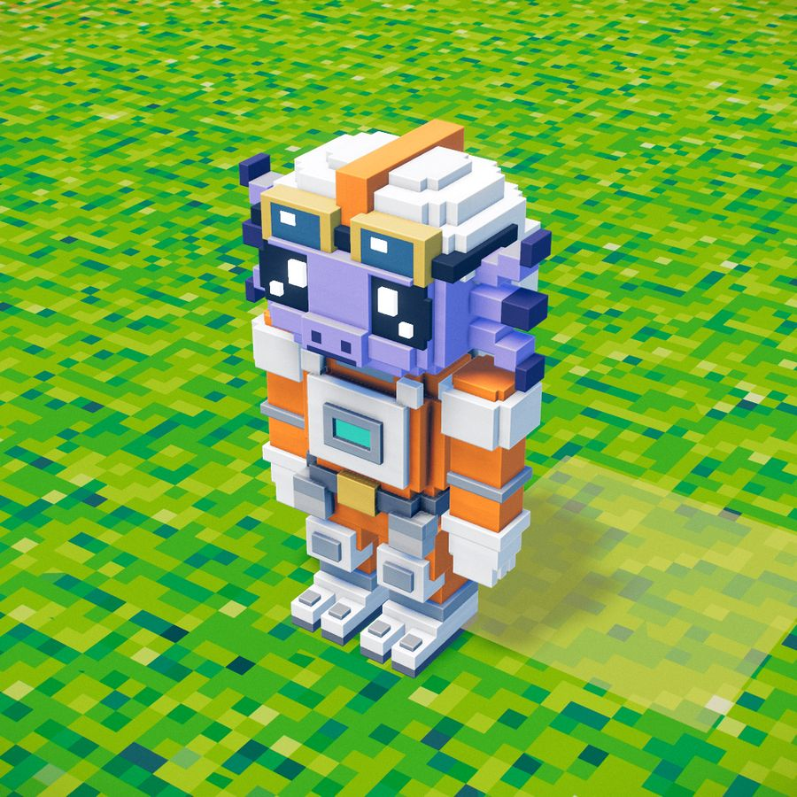
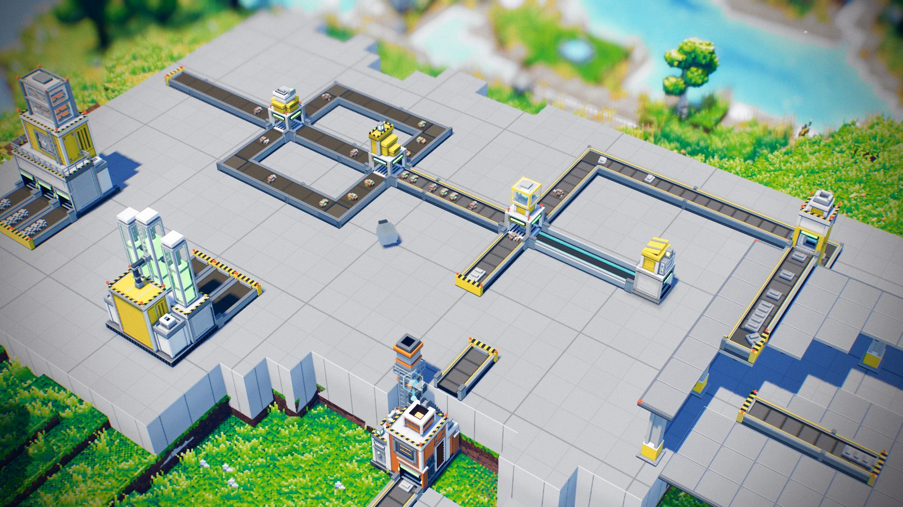
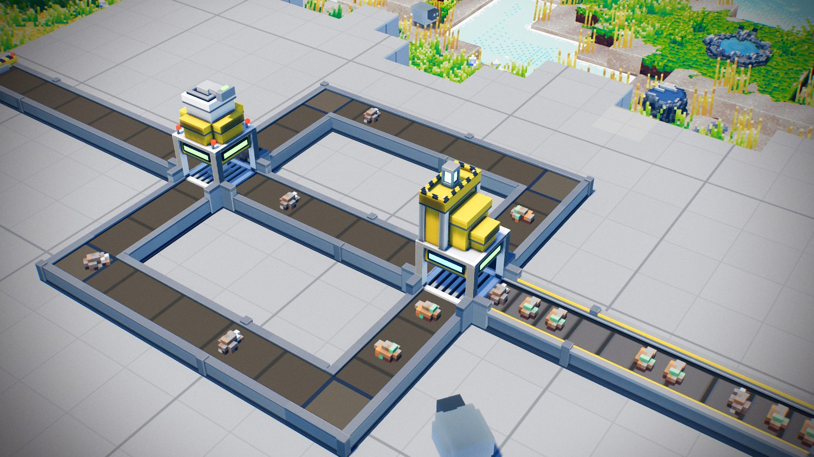

하늘섬 공장 게임 SKYROOT의 v4.2 기계들이에요. 1차 비평까지 마친 기계 39종을 같은 자연 평지, 같은 낮 조명으로 찍었어요. 뒷면 보기 버튼으로 뒤쪽을 볼 수 있고, 사진을 누르면 앞뒤를 나란히 크게 볼 수 있어요.

합격은 직접 보고 고른 기계예요. 점수는 비평 에이전트의 1차 점수이고, 그 뒤 고친 모습이라 지금과 다를 수 있어요. 믹서는 재작업 판에서 살린 모델이라 점수가 없어요. 벨트와 물류는 새 벨트 기준이에요.
벨트 3종, 분배기, 합류기, 필터, 승강기, 상자, 발판, 바닥판을 같은 언어로 새로 만들었어요.

